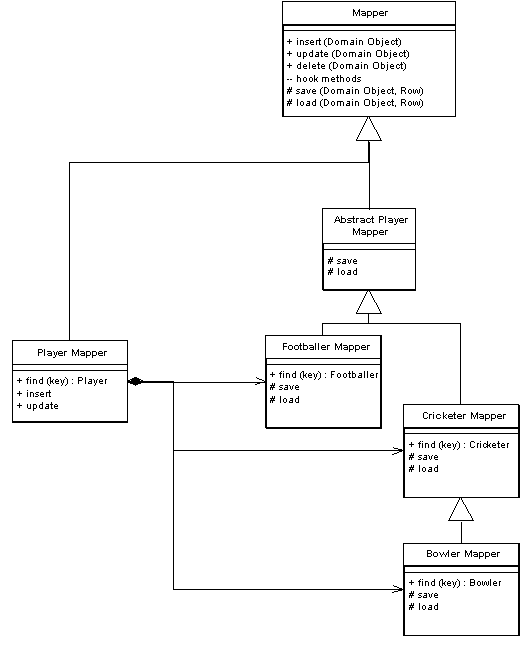

Inherritance Mappers (Наследуемые распределители)

Паттерн проектирования Inherritance Mappers
Описание Inherritance Mappers
Структура организации распределителей данных, которые работают с деревом наследования
При работе с распределением объектных данных из дерева наследования в БД, необходимо уменьшить объём кода, используемого для записи и чтения данных из БД. Также необходимо предоставлять и абстрактные, и конкретные методы распределения данных, которые позволяли бы сохранять и читать и родительские и дочерние классы.
Не смотря на то, что нюансы такого поведения могут видоизменяться в зависимости от схемы работы с деревом насделования ( Single Table Inheritance, Class Table Inheritance или Concrete Table Inheritance), общая струтура одинакова для них всех.
Использована иллюстрация с сайта Мартина Фаулера.